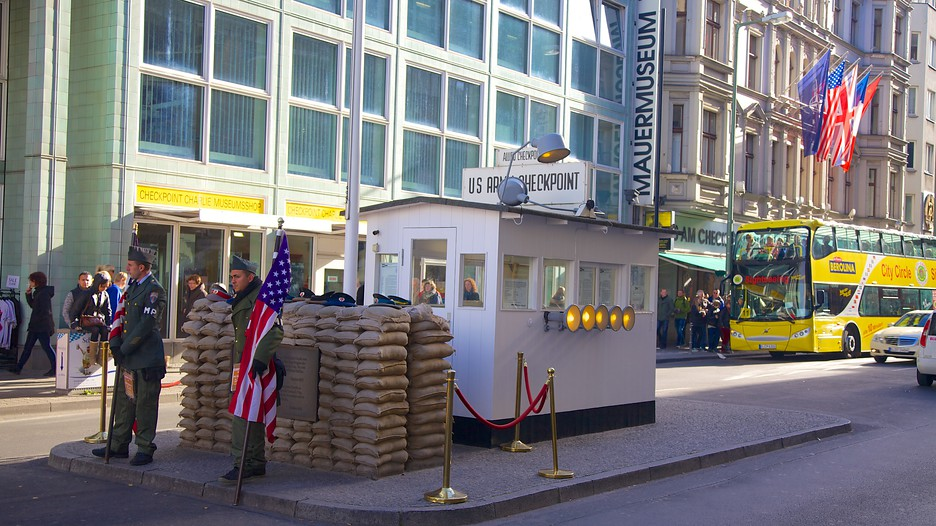

Checkpoint Charlie (or "Checkpoint C") was the name given by the Western Allies to the best-known Berlin Wall crossing point between East Berlin and West Berlin during the Cold War. GDR leader Walter Ulbricht agitated and maneuvered to get the Soviet Union's permission to construct the Berlin Wall in 1961 to stop Eastern Bloc emigration westward through the Soviet border system, preventing escape across the city sector border from communist East Berlin into free West Berlin. Checkpoint Charlie became a symbol of the Cold War, representing the separation of East and West. Soviet and American tanks briefly faced each other at the location during the Berlin Crisis of 1961.